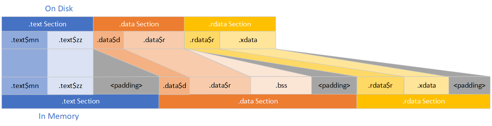

A COFF Group is a named contiguous 'chunk' of a binary section. All COFF Groups in a section share the same set of characteristics such as being executable or read-only or read-write. What they offer is a name that helps semantically understand a section at the next level of detail.
When the OS loads a binary into memory, these COFF Groups get expanded in memory, as shown in the diagram to the right. The COFF Groups are sorted, by the linker, so they exist in alphabetical order within their parent section in the binary. The exception is for COFF Groups that exist in-memory but not on-disk, those are always last so they can be materialized into the section padding. When a COFF Group is mapped into the address space of a process, generally they will be mapped directly from disk as-is as a big continuous chunk of memory. But sometimes, like with the .bss COFF Group, they don't exist on-disk and will be materialized when used, as zero-initialized pages, which you can also see in the diagram.
For more details on the padding shown, see the page on binary sections.
One thing that makes COFF Groups, like sections, tricky to talk about is that their names are just by convention
in most cases. For example, the .text section is, by convention, used to hold the code in a binary commonly, and thus all COFF Groups
within the .text section are code. But nothing stops you from picking your own names, and in fact several popular libraries define
their own COFF Groups (such as the CRT, and WRL).
As a result of this all being by convention, we can't easily just say "if you want to find all of your code, look in .text" and
instead need to see all of these obtuse/arcane names directly in tools like SizeBench. To aid with that, here is a "decoder ring" with some
commonly-seen sections in the wild, and what they mean in human-readable words. These are grouped by section since that's often how you'll
navigate to a COFF Group in SizeBench's UI.
| Section Name | COFF Group Name | Purpose | Ways To Reduce |
|---|---|---|---|
| .data | .data$00 | Data that is in phase 00, corresponds to Pri7-00 code phase. | Stop initializing data in the declaration if possible, especially zero initialized. |
| .data | .data$01 | Data that is in phase 01, corresponds to Pri7-01 code phase. | |
| .data | .data$d | RTTI type information that needs to be written to. | Disable RTTI. |
| .data | .data$dk | PGO “Don’t know”, global vars we only see reads to, but have their address taken (and may have been written to through a pointer). | |
| .data | .data$pr | "PGO Read", global vars we’re certain were only read from in training. | |
| .data | .data$r | RTTI for writable data. | Disable RTTI. |
| .data | .data$zz | Data that is "dead" because it is not accessed during PGO training. It's placed here at the end of .data so it's least likely to be paged off disk. |
|
| .didat | .didat* | Delay-loaded Import Address Table (IAT) | There can be many COFF Groups that begin with ".didat$", I have yet to figure out how they differ, but they're all related to delay-loaded imports. |
| .rdata | .cfguard | Control Flow Guard (CFG) data. | Have less indirect function calls - virtual functions are frequently a major contributor here (the Wasteful Virtuals functionality may help with reducing these). You can also disable CFG for your binary - but this has security implications so make sure you deeply understand your scenarios and deployment environment. This is rarely advisable. |
| .rdata | .CRT$XCA | First C++ Initializer. |
Use constexpr/const more often, and use POD types more often - this also reduces the .text$di COFF Group and CPU use on DLL
load so that's an added bonus. For some examples of this, see the dynamic initializers page. |
| .rdata | .CRT$XCAA | Startup C++ Initializer. | |
| .rdata | .CRT$XCU | Debug code masquerading as CRT code. | |
| .rdata | .CRTA$XCZ | Last C++ Initializer. | |
| .rdata | .CRTA$XDA | First Dynamic TLS Initializer. | |
| .rdata | .CRTA$XDZ | Last Dynamic TLS Initializer. | |
| .rdata | .CRTA$XIA | First C Initializer. | |
| .rdata | .CRT$XIAA | Startup C Initializer. | |
| .rdata | .CRT$XIC | CRT C Initializers. | |
| .rdata | .CRTA$XIZ | Last C Initializer. | |
| .rdata | .CRTA$XLA | First Loader TLS Callback. | |
| .rdata | .CRT$XLC | CRT TLS Constructor. | |
| .rdata | .CRT$XLD | CRT TLS Terminator. | |
| .rdata | .CRTA$XLZ | Last Loader TLS Callback. | |
| .rdata | .CRTA$XPA | First Pre-Terminator. | |
| .rdata | .CRTA$XPB | CRT ConcRT (Concurrency Runtime) Pre-Terminator. | |
| .rdata | .CRT$XPX | CRT Pre-Terminators. | |
| .rdata | .CRT$XPXA | CRT stdio Pre-Terminator. | |
| .rdata | .CRTA$XPZ | Last Pre-Terminator. | |
| .rdata | .CRTA$XTA | First Terminator. | |
| .rdata | .CRTA$XTZ | Last Terminator. | |
| .rdata | .CRTMA$XCA | First Managed C++ Initializer. | |
| .rdata | .CRTMA$XCZ | Last Managed C++ Initializer. | |
| .rdata | .CRTVT$XCA | First Managed VTable Initializer. | |
| .rdata | .CRTVT$XCZ | Last Managed VTable Initializer. | |
| .rdata | .edata | Exported function data. Documented as part of the PE Format. |
Export fewer functions from your binary. When exported by name, the exported function's name must exist as a string, so consider exporting by ordinal if that's sufficient. |
| .rdata | .gfids | Control Flow Guard (CFG) data. | Have less indirect functionc alls - virtual functions are frequently a major contributor here (the Wasteful Virtuals functionality may help with reducing these). You can also disable CFG for your binary - but this has security implications so make sure you deeply understand your scenarios and deployment environment. This is rarely advisable. |
| .rdata | .idata* | Imported function data. Documented as part of the PE Format. |
Import fewer functions into your binary. |
| .rdata | .rdata | Other read-only data. | Yes, unfortunately there is a COFF Group named .rdata within the .rdata section so it gets confusing to refer to these by name. If you're using Profile Guided Optimization (PGO), this is where un-phased read-only data goes. This is basically a catch-all bucket for all other types of read-only data not called out elsewhere - such as strings, vtables, and constant data like big arrays. As such, it's difficult to give specific guidance on reduction, but consider looking at the Wasteful Virtuals functionality in SizeBench, as well as the Duplicate Data functionality for some starters. Or just look at the symbols in here to see if anything stands out. |
| .rdata | .rdata$00 | Read-only data that is "hot" from PGO, in phase 0 | Reduce read-only data, or make some of this data more 'cold' to PGO by not accessing it during PGO training. |
| .rdata | .rdata$01 | Read-only data that is "hot" from PGO, in phase 1 | Reduce read-only data, or make some of this data more 'cold' to PGO by not accessing it during PGO training. |
| .rdata | .rdata$brc | Base relocation clustering, controlled by the /baserelocclustering option in the linker. | |
| .rdata | .rdata$r | Read-only data used by RTTI | Disable RTTI. |
| .rdata | .rtc$IAA | First RTC (Run-Time-Checks) Initializer. | |
| .rdata | .rtc$IZZ | Last RTC (Run-Time-Checks) Initializer. | |
| .rdata | .rtc$TAA | First RTC (Run-Time-Checks) Terminator. | |
| .rdata | .rtc$TZZ | Last RTC (Run-Time-Checks) Terminator. | |
| .rdata | .rdata$wbrd | Read-only data that is related to Warbird code obfuscation. | Warbird is undocumented and intended to be Microsoft-internal. You probably aren't using this. |
| .rdata | .rdata$zETW0 | A fixed-length header that is present if the DLL contains any TraceLoggingWrite | |
| .rdata | .rdata$zETW1 | Read-only data that contains one chunk of metadata for each TraceLoggingWrite | |
| .rdata | .rdata$zETW2 | Read-only data that contains one chunk of metadata for each TRACELOGGING_DEFINE_PROVIDER | |
| .rdata | .rdata$zETW9 | A fixed-length footer that is present if the image contains any TraceLoggingWrite | |
| .rdata | .rdata$zz | Read-only data that is "dead"/very cold because it is not accessed during PGO training. | Same strategies as .rdata COFF Group, or if you want something in here to be hot then touch it in PGO training which will move it to another COFF Group. |
| .rdata | .xdata | Exception data used for stack unwinding and ETW stack walking on amd64, arm, and arm64 (not used on x86). | Exceptions are a complex topic and have their own page. |
| .text | .text$di | Code for dynamic initializers | See the dynamic initializers page for details. |
| .text | .text$lp* | Code in a "loader phase" from Profile Guided Optimization (PGO). lp00 is "loader phase 00" and is the hottest code, lp01 is "loader phase 01" and is the second-hottest code after lp00, and so on as the loader phase numbers increase. In most uses of PGO, you'll only have one phase, so you'll only see lp00. |
|
| .text | .text$mn | The "main" code | If using Profile Guided Optimization (PGO), this is where code is
placed that can't be PGO'd into a phase. This may indicate LTCG isn't turned on correctly. If not using PGO, this is where most of your code will go, unless it fits in another bucket described. |
| .text | .text$np | Code that has optimizations turned off, is written in assembly, or is otherwise unable to be optimized by the entire toolchain. I think np stands for "no pgo" or "no pragma". |
Allow optimizations (remove #pragmas stopping this). |
| .text | .text$x | Exception Handling funclets such as __finally blocks | Exceptions are a complex topic and have their own page. |
| .text | .text$yd | Code for atexit destructors, the inverse of dynamic initializers | See the dynamic initializers page for details. When removing a dynamic initializer, generally you will also remove an atexit destructor that pairs with it. |
| .text | .text$yz | Code blocks (as in, a single if block within a function, for example) that are "cold" to PGO, but within a "hot" function. | |
| .text | .text$zs | Code that is not dead, but is rarely called in training. Also inserted when using TFL (Telemetry Function Lists), where traditional training based PGO is augmented using telemetry data. Functions that are rarely called in training, but telemetry shows are important, can therefore be separated from .text$zy and .text$zz for better locality. |
|
| .text | .text$zy | Code blocks (as in, a single if block within a function, for example) that are "dead" to
PGO - not seen in training data. This code may be "live" but for cases not hit in the PGO training lab so it is moved to colder pages. |
|
| .text | .text$zz | The same as .text$zy except for whole functions that are "dead"/cold. | |
| .text | .text$*_coldboot | Code that is only executed during PGO training of cold boot scenarios. | This applies only to Windows OS binaries, the Windows fundamentals team will manage this for you if this applies to you. Name is set as part of the build process and is used for "phasing" / code locality. |
| .text | .text$*_clientonly | Code that is shared between client and server (despite its name). Historically, also used for Windows Phone-only code if the binary is built in the phone repo and only used on mobile. |
This applies only to Windows OS binaries, the Windows fundamentals team will manage this for you if this applies to you. Name is set as part of the build process and is used for "phasing" / code locality. |
| .text | .text$*_hybridboot | Code that is executed during PGO training of cold or hybrid boot scenarios. | This applies only to Windows OS binaries, the Windows fundamentals team will manage this for you if this applies to you. Name is set as part of the build process and is used for "phasing" / code locality. |
| .text | .text$*_pri7 | Code that is executed during Pri-7 database training scenarios. | This applies only to Windows OS binaries, the Windows fundamentals team will manage this for you if this applies to you. Name is set as part of the build process and is used for "phasing" / code locality. |
| .text | .text$*_serveronly | Code that is only executed during PGO training on Server SKUs. | This applies only to Windows OS binaries, the Windows fundamentals team will manage this for you if this applies to you. Name is set as part of the build process and is used for "phasing" / code locality. |
If you want to explore COFF Groups there are some other tools available beyond SizeBench. The MSVC Linker (link.exe) is a good one. You can execute a command like this:
link /dump /headers /coffgroup path\to\your\binary.dll
You'll see a Debug Directory listed that has some COFF Groups with names like these (note that all sizes are in hex, as bytes):
Debug Directories
Time Type Size RVA Pointer
-------- ------- -------- -------- --------
55557445 cv 2C 00BE097C BDF77C Format: RSDS, {9B038C1E-EFC9-46E0-A0D9-0FB65786A656}, 1, windows.ui.xaml.pdb
55557445 coffgrp D8 00BE0A10 BDF810 50475500 (PGU)
RVA Size Name
-------- -------- ----
000016C0 60874 00windows.ui.xaml.dll!20_pri7
00061F40 268D65 01windows.ui.xaml.dll!20_pri7
002CACB0 31E6 03windows.ui.xaml.dll!30_clientonly
002CDE98 10C 06windows.ui.xaml.dll!35_hybridboot
002CDFB0 5AD97 07windows.ui.xaml.dll!35_hybridboot